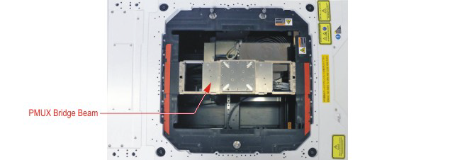

Interfacing the test system to TEL Precio wafer prober
This section takes you through the steps needed to interface the V93000 test system with the Tokyo Electric Limited TEL Precio wafer prober:
You need to go through the following steps:
- Prepare the wafer prober for the installation of a special piece of hardware called the Direct Probe™ Bridge Beam. This involves protecting the chuck on the wafer prober prior to installing the bridge beam.
- Install the Direct Probe™ Bridge Beam hardware in the wafer prober.
- Load a DUT board into the wafer prober.
The following figure shows the Bridge Beam installed on the wafer prober. The prober chuck can be seen underneath the Bridge Beam.

The TEL Precio wafer prober can be fitted with three types of Bridge Beam:
- Bridge Beam Direct Probe for Digital and Mixed Signal (E8016BBD)
- Bridge Beam Direct Probe for PSRF (E8016BBRF)
- Bridge Beam Direct Probe for WSRF and PMUX (E8016BBWS)
All three types have identical external dimensions and the mounting procedure is the same in each case. The differences are in the functionality of each type of Bridge Beam, and each type has been adapted accordingly.
The figure above shows the digital Bridge Beam installed on a TEL Precio Wafer Prober. The procedures to install and connect up the Bridge Beam are based on the WSRF type.
Functional changes
- Introduced in SmarTest 7.4.2